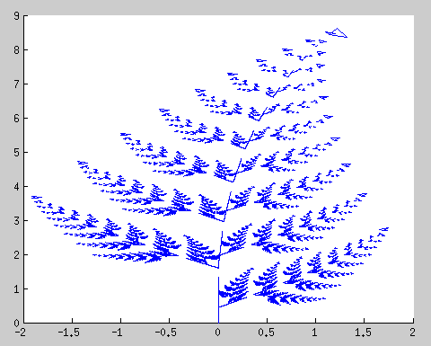

| Document précédent | Document suivant |
Systèmes itératifs de fonctions
Fougères
L'image suivante d'une fougère a été produite à l'aide d'un SIF.

Le SIF est composé de quatre fonctions au lieu de trois pour le triangle de Sierpinski. Pour visualiser l'action des quatre fonctions, il suffit de choisir un ensemble simple comme un carré et de faire une seule itération du SIF à l'aide de l'application suivante. Nous obtenons quatre images qui correspondent à l'action des quatre fonctions sur l'ensemble simple choisi.
- Nombre d'itérations:
- Figure initiale:
Le lecteur ne devrait pas choisir plus de 7 ou 8 itérations. Plus d'itérations va probablement remplir la mémoire allouée au fureteur par l'ordinateur.
La fougère ci-dessus est générée par le SIF composé des quatre fonctions suivantes.
- Première fonction:
X = 0
Y = 0.16 y - Deuxième fonction:
X = 0.849 x + 0.0356 y
Y = -0.0356 x + 0.849 y + 1.6 - Troisième fonction:
X = 0.197 x - 0.257 y
Y = 0.226 x + 0.223 y + 1.6 - Quatrième fonction:
X = -0.15 x + 0.23 y
Y = 0.32 x + 0.238 y + 0.44
Feuilles
L'image suivante d'une feuille a été produite à l'aide d'un SIF.

Le SIF est composé de quatre fonctions. Pour visualiser l'action des quatre fonctions, il suffit de choisir un ensemble simple comme un triangle et de faire une seule itération du SIF à l'aide de l'application suivante. Nous obtenons quatre images qui correspondent à l'action des quatre fonctions sur l'ensemble simple choisi.
- Nombre d'itérations:
- Figure initiale:
Comme précédemment, le lecteur ne devrait pas choisir plus de 7 ou 8 itérations. Plus d'itérations va probablement remplir la mémoire allouée au fureteur par l'ordinateur.
La feuille ci-dessus est générée par le SIF composé des quatre fonctions suivantes.
- Première fonction:
X = 0.6 x + 0.18
Y = 0.6 y + 0.36 - Deuxième fonction:
X = 0.6 x + 0.18
Y = 0.6 y + 0.12 - Troisième fonction:
X = 0.4 x + 0.3 y + 0.27
Y = -0.3 x + 0.4 y + 0.32 - Quatrième fonction:
X = 0.4 x - 0.3 y + 0.27
Y = 0.3 x + 0.4 y + 0.09
Dimensions fractales
Il n'y a pas de définition précise d'un ensemble fractal. Benoit
B. Mandelbrot (le père de la géométrie fractale) défini un ensemble
fractal comme un ensemble pour lequel la dimension
de Hausdorff
est
strictement plus grande que la dimension topologique. Quelques
mathématiciens vont aussi exiger qu'il y ait autosimilarité (c'est le
cas du triangle de Sierpinski).
Nous considérons seulement les notions de dimension d'homothétie et de dimension de Minkowski.
Dimension d'homothétie
La dimension d'homothétie d'un ensemble A est définie par l'équation
où a est le nombre
de petits
ensembles semblables à l'ensemble de départ
et s est la mise à l'échelle des dimensions
utilisée pour produire les petits
ensemble. Par
exemple:
-
La dimension d'homothétie d'une droite est 1. Pour
s = 1/4 et a = 4,
nous obtenons
log(a)/log(1/s) = log(4)/log(4) = 1.Nous laissons au lecteur le soin de décrire les quatre (évidentes) fonctions du SIF sur l'intervalle [0,1] dont la limite après un nombre infini d'itérations est [0,1].
-
La dimension d'homothétie d'un cube est 3. Pour
s = 1/2 et a = 8,
nous obtenons
log(a)/log(1/s) = log(8)/log(3) = log2(8) = 3.De nouveau, nous laissons au lecteur le soin de décrire les huit (évidentes) fonctions du SIF sur le cube [0,1]3 dont la limite après un nombre infini d'itérations est [0,1]3.
-
La dimension d'homothétie du triangle de Sierpinski est 1.5850. Pour
s = 1/2 et
a = 3, nous obtenons
log(a)/log(1/s) = log(3)/log(2) ∼ 1.5850.Pour s = 1/4 et a = 9, nous obtenonslog(a)/log(1/s) = log(9)/log(4) ∼ 1.5850.
Dimension de Minkowski
La dimension de Minkowski d'un ensemble A est définie par la formule suivante.
où N(A,µ) est le plus petit nombre de carrés de côtés de longueur µ > 0 nécessaires pour couvrir A.
| Document précédent | Document suivant |